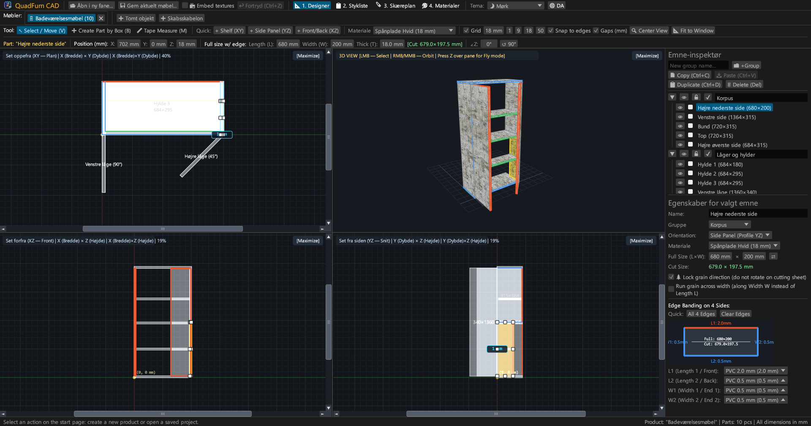
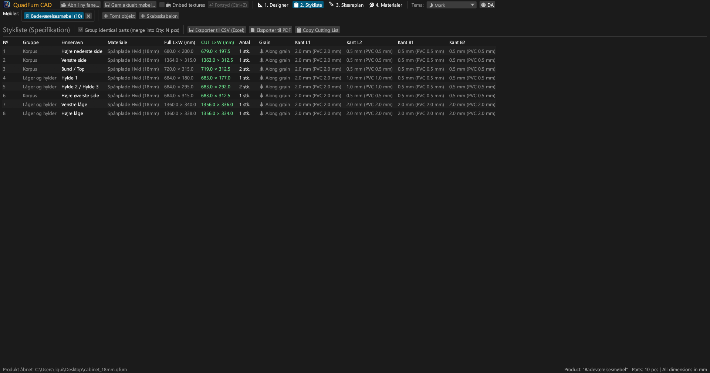
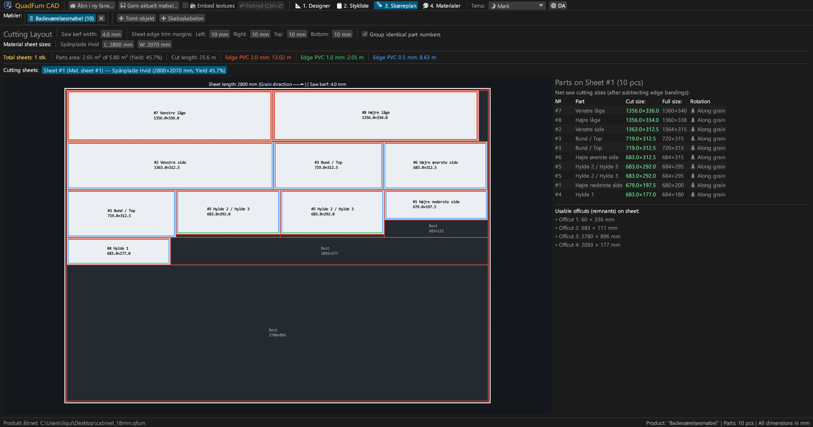
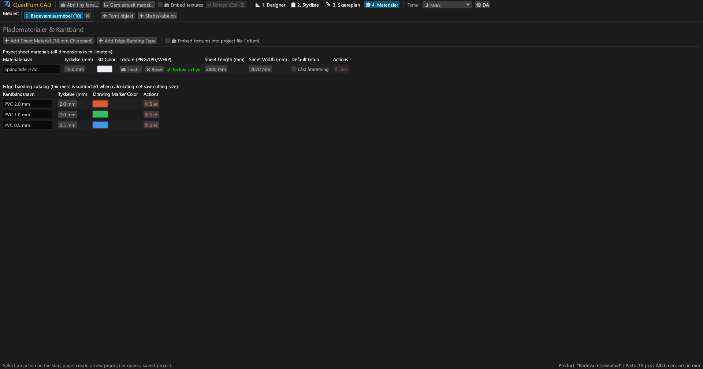
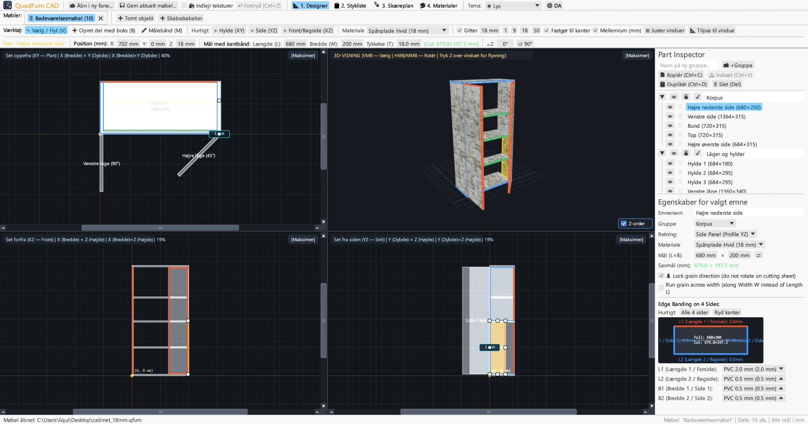
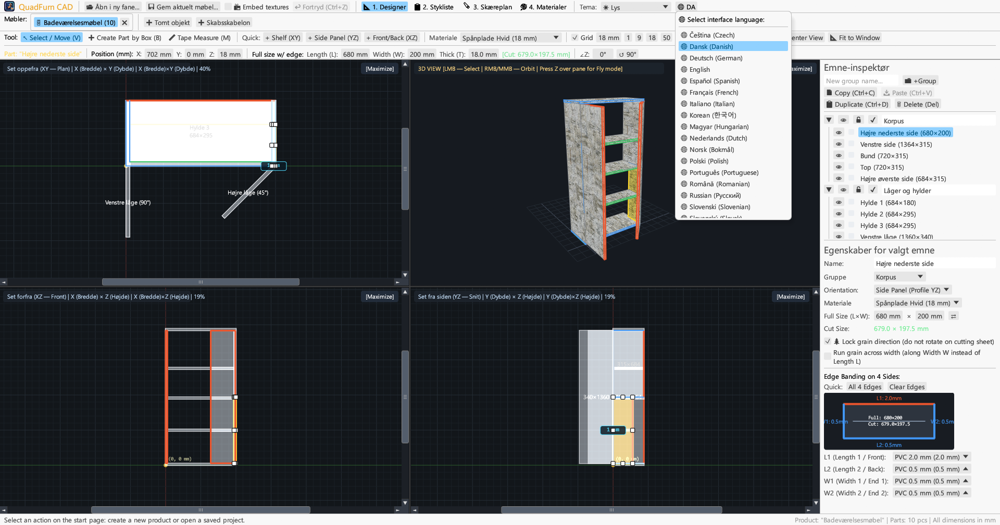

Hurtig CAD til møbelsnedkere. 4-visnings synkroniseret modellering, formelberegning, kantbåndsfradrag og skærelayout.

Kombinerer 4-visnings tegning, numerisk styring og skæreoptimering i ét program.
Samtidig redigering i Plan (XY), Front (XZ), Side (YZ) og 3D med magnetisk låsning og dynamiske afstandsmål.
Direkte indtastning af koordinater (X, Y, Z), mål (L × B × T) og vinkel med formelberegner (f.eks. 600-4).
Tildeling af PVC/ABS-kantbånd (0,4–2,0 mm) til 4 kanter for at beregne det nøjagtige netto savmål.
Skæremotor der tager højde for åreretning, klinge (4,0 mm), renskæring og registrering af brugbare rester.
Arbejd på flere møbler samtidigt. Kopiér og indsæt elementer mellem faner med materialeoverførsel.
Klar til udskrift i A4 Liggende: stykliste, 4-visnings tegninger, skæreplaner og materialeoversigt med +15 % margen.





Selvstændige eksekverbare filer uden eksterne afhængigheder.
Portabel eksekverbar fil med ikon, kræver ingen installation.
sudo apt install ./quadfurn_0.2.2_amd64.deb
Universal App-pakke til Apple Silicon (M1–M4) og Intel x86_64.
| Tast | Handling | Område |
|---|---|---|
| V | Vælg / Flyt-værktøj (8 håndtag, markeringsramme) | 2D-visninger |
| B | Opret element med ramme i aktivt plan | 2D-visninger |
| M | Målebånd (nøjagtig måling af afstande i mm) | 2D-visninger |
| Z | Førstepersons flyvetilstand (WASD) | 3D-vindue |
| ← → ↑ ↓ | Flyt elementer med gittertrin (Shift for dobbelt trin) | 2D-visninger |
| Ctrl + C / V | Kopiér / indsæt elementer (mellem faner) | Alle faner |
| Ctrl + D | Duplikér valgte elementer med forskydning | Aktivt projekt |
| Ctrl + S | Gem projekt som .qfurn / .json fil | Aktivt projekt |
| Ctrl + Z | Fortryd handling (op til 40 trin) | Aktivt projekt |
| Delete / Backspace | Slet valgte elementer | Aktivt projekt |